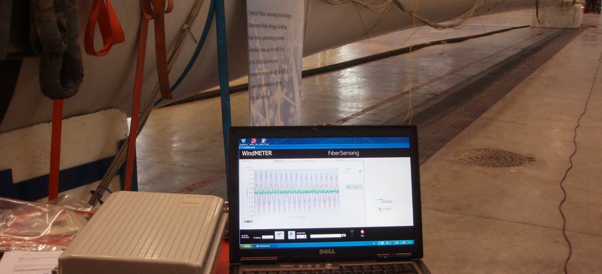
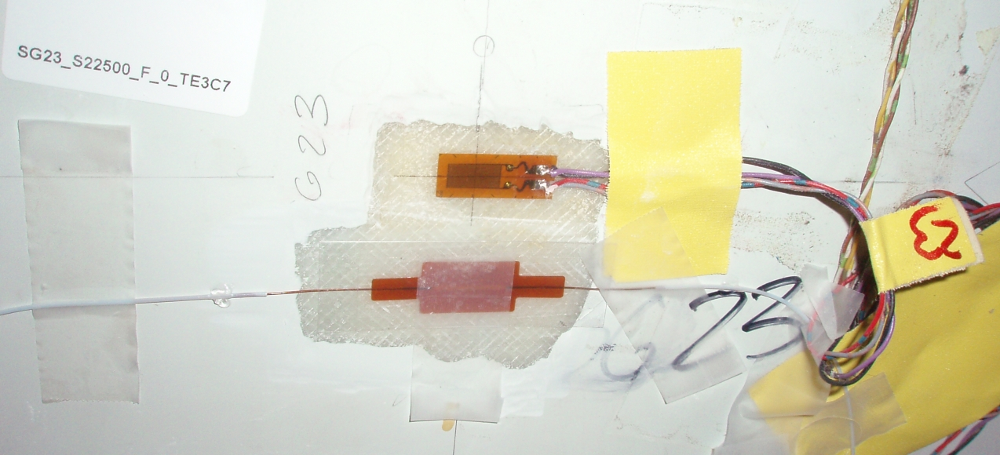
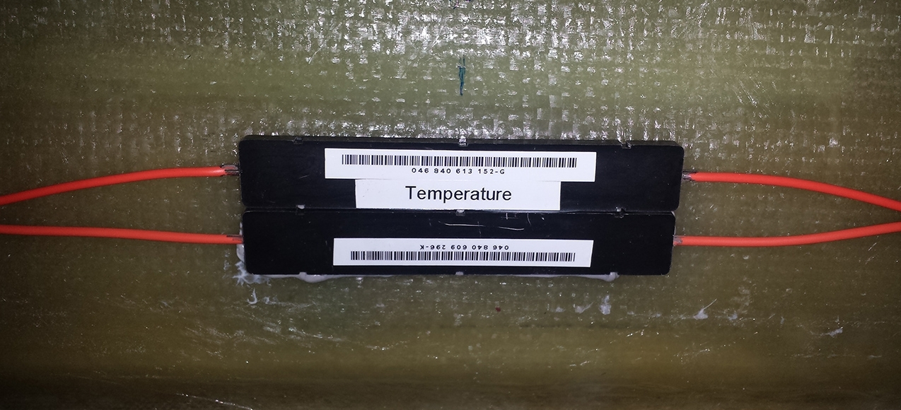
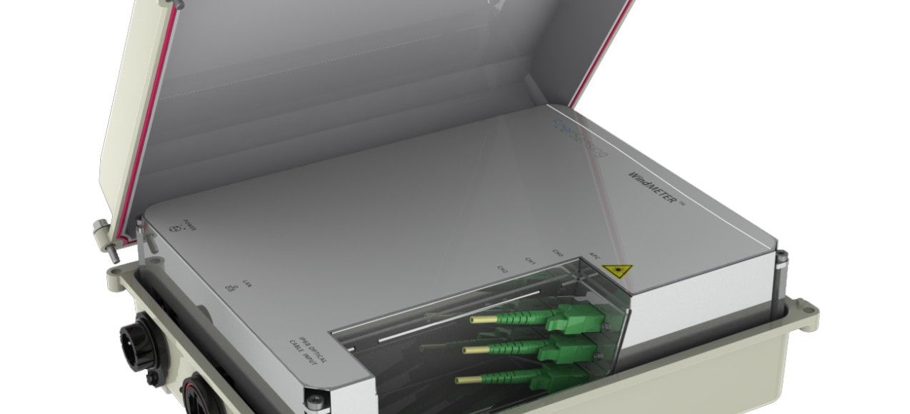

WindMETER
Wind Blade Load Assessment using a Strain Monitoring System
This case study refers to the installation of a Fiber Bragg Grating based system – WindMETER at ECN – Energy Center of The Netherlands in test turbine blades with the main goal of validating their own sensor development.
ECN started to conduct several laboratory tests in order to identify which system had best performance among several solutions available on the market, thus initiating a series of deployments in turbines for concept validation of ECN's sensor.
After careful evaluation of several parameters like interference of polarization effect on measurement signal, long term accuracy and robustness of the equipment, WindMETER was chosen as the best performant.
Long term accuracy and robustness.
- 
- 
- 
- 
WindMETER Blade Monitoring System
The WindMETER System (Strain Monitoring System for wind blades) was developed by FiberSensing in order to target the wind turbine load measurement market.
FiberSensing’s expertise on FBG technology and WDM (Wavelength Division Multiplexing) interrogation technique allowed the conception of a reliable and unique measuring solution when compared with other existing alternatives.
The system provides real time measurement of strain experienced by wind blades using fiber Bragg grating sensors that are intrinsically multiplexable, passive and immune to electrical interferences and lightning.
The accurate measure- ment of strain is valuable information and an advantage towards visual inspection and corrective maintenance.
The accuracy of the system attained by using an internal reference that corrects the actual measured value every 10 ms, produces reliable and accurate results during extended temperature range, benefiting downstream systems that are relying on such kind of information such as CMS – Condition Monitoring Systems or Control Systems and IPC Individual Pitch control.
This monitoring system is composed of several Bragg strain sensors that can be embedded during blade manufacturing process or glued on the blade surface and an interrogator. The sensors can be deployed in series, meaning that one optical fiber can allocate several measurement points. The interrogator is capable of measuring several sensors simultaneously at 100 Samples/s.
- 2010 1st Prototype
- 8 h Installation Time
- 4 h Calibration Time
- 100 Samples/second